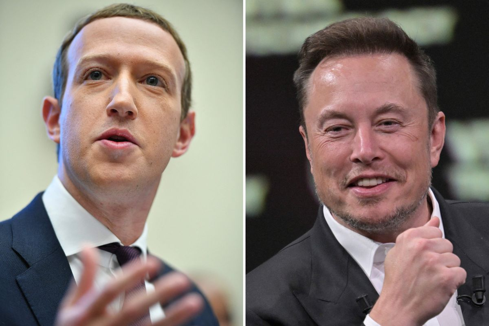

Zuckerberg vs. Musk: luta pode acontecer em ringue mais famoso do mundo
O mundo dos bilionários está ficando cada dia mais bizarro, já que Elon Musk e Mark Zuckerberg, dois dos homens mais ricos do mundo, estão planejando uma luta livre de verdade que pode realmente acontecer no Coliseu. O site TMZ informou na sexta-feira (30) que o ministro da cultura da Itália entrou em contato com Zuckerberg, dono do Facebook, Whatsapp e Instagram, para sugerir a realização da tão aguardada luta.
Zuckerberg passou a mensagem para Dana White, presidente do UFC, cujo pessoal contatou o alto funcionário do governo italiano. Na mesma época em que a notícia foi publicada, Musk twittou: “Alguma luta casual acontece no Coliseu.” E também postou uma cena do filme de comédia “Monty Python’s Life of Brian”, que retrata uma luta no coliseu de Jerusalém, acrescentando: “Preciso trabalhar minha resistência”.
Musk e Zuckerberg podem lutar no Coliseu Segundo o TMZ Sports, o Ministério da Cultura da Itália divulgou um comunicado dizendo que “Não houve contato formal, mesmo que a notícia pareça saborosa é infundada.” Mas fontes afirmaram que o Ministério já procurou Mark Zuckerberg e Dana White, e uma reunião foi marcada para a próxima semana para tratar do assunto. O Ministério disse que “Se Zuckerberg e Musk quiserem se apresentar no Coliseu, teriam que fazer um desafio não violento”.
Criado há quase 2000 anos e considerado uma das 7 Maravilhas do Mundo, o Coliseu não tem eventos há centenas de anos, e apenas algumas centenas de espectadores podem sentar-se em assentos temporários dentro do teatro. O cantor Paul McCartney se apresentou no Coliseu em 2003 para um show beneficente exclusivo para 400 pessoas que pagaram até US$ 7.000 — mas fora isso, todos os outros shows foram realizados do lado de fora da estrutura.
Isso significa que se Musk e Zuckerberg realmente forem lutar no Coliseu, apenas algumas centenas de pessoas poderiam ver a batalha presencialmente, mas seria um espetáculo especial se acontecesse. No início desta semana, Elon Musk provocou Mark Zuckerberg e o chamou literalmente para uma luta de MMA. Zuckerberg não mostrou medo e respondeu o chefão da Tesla com um simples: “me envie a localização”.
Os dois então concordaram em lutar depois de trocar uma série de mensagens e o presidente do UFC, Dana White, afirmou que recebeu ligação de ambos os bilionários, afinando que os dois estão “falando sério”. Musk recebeu uma oferta de treinamento dos lutadores de MMA Jorge Masvidal e Sean Strickland, mas o treinador do astro do UFC Khabib Nurmagomedov, Javier Mendez, está sugerindo que Zuckerberg saia vitorioso.
O fundador do Facebook tem experiência em jiu-jitsu brasileiro, recentemente participou de seu primeiro torneio e conquistou uma medalha de ouro e uma de prata em duas disciplinas diferentes. Público quer pagar pela luta com criptomoedas Elon Musk chamou atenção nos últimos anos por apoiar a criptomoeda Dogecoin (DOGE). Enquanto ele entrou para de entrar para o conselho da Dogecoin em 2021, o bilionário também passou a aceitar a criptomoeda nas lojas da Tesla e da SpaceX no ano seguinte. Agora, o público pede que Musk aceite a Doge como pagamento para assistir ao combate. “Doge como patrocinador?” questionou um de seus seguidores, “podemos apostar em Doge?”, perguntou outro.
Autor(a): Felipe Silva
Data de Publicação: 01 de julho de 2023